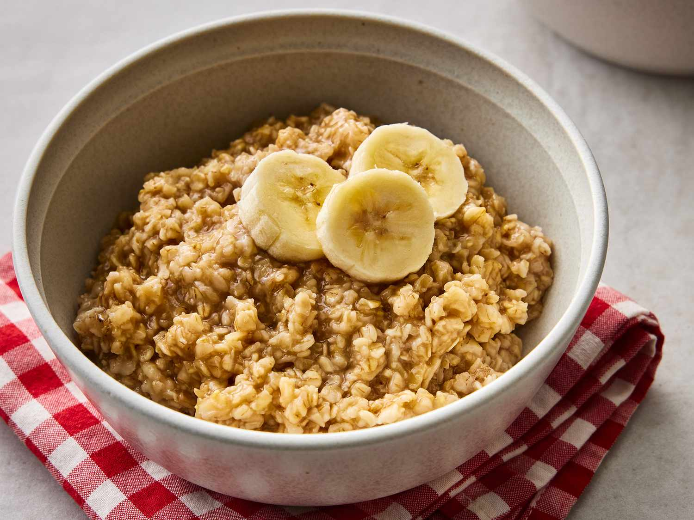

HOW TO MAKE OATMEAL
Ingredients
- 1/2 cup oats
- 1 Cup water or milk
- Dash of salt (optional; for low sodium diets, omit salt)
Directions
- Boil water or milk and salt.
- Stir in oats.
- Cook about 5 minutes over medium heat; stir occasionally.

Reference site on how to prepare it